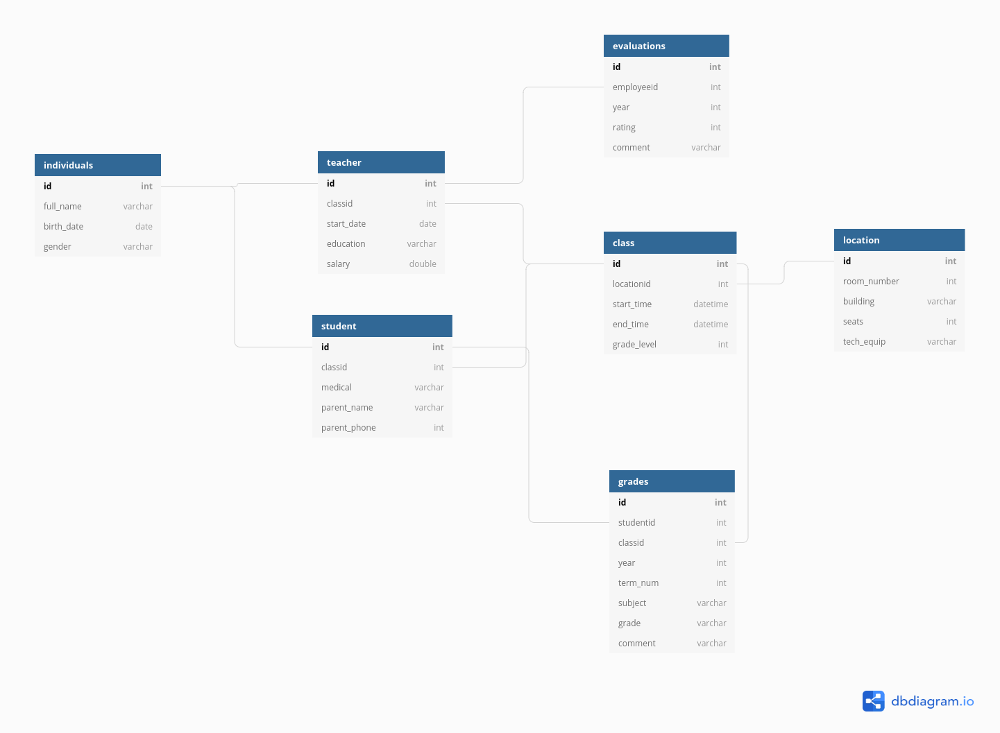
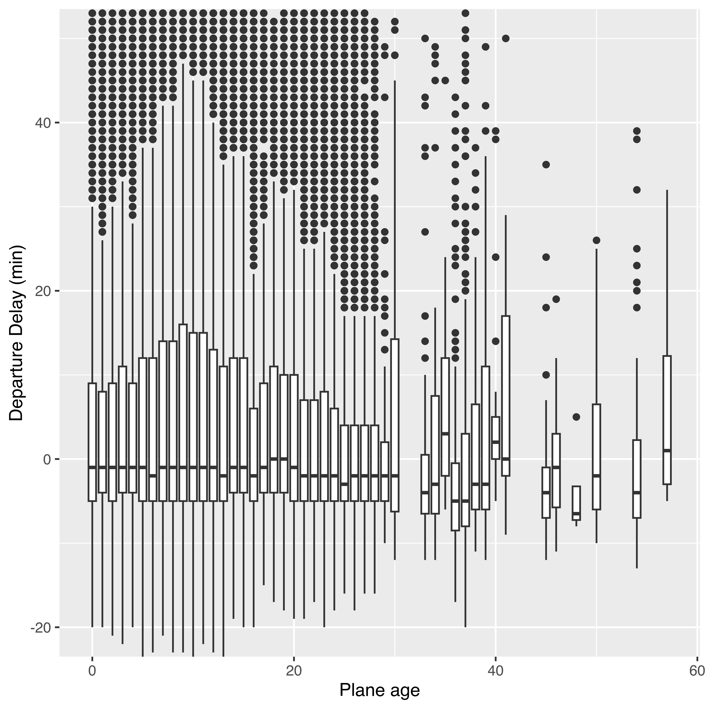
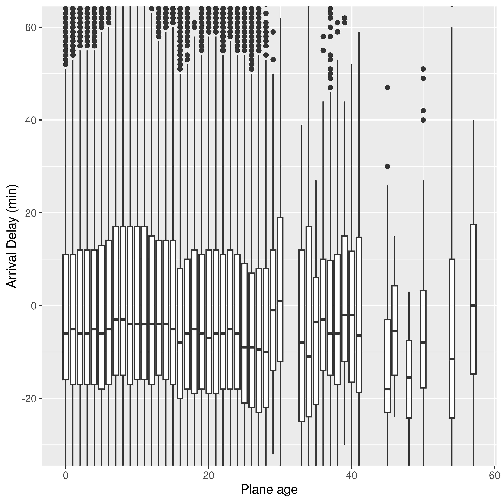
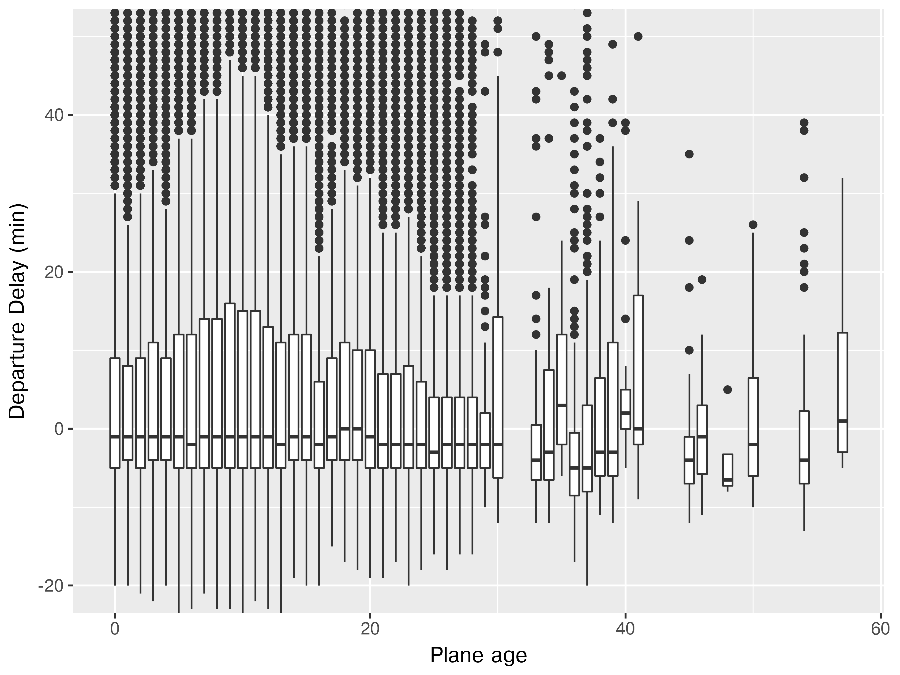
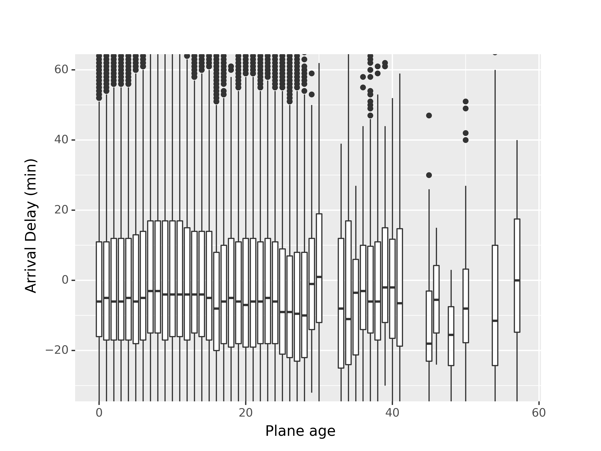
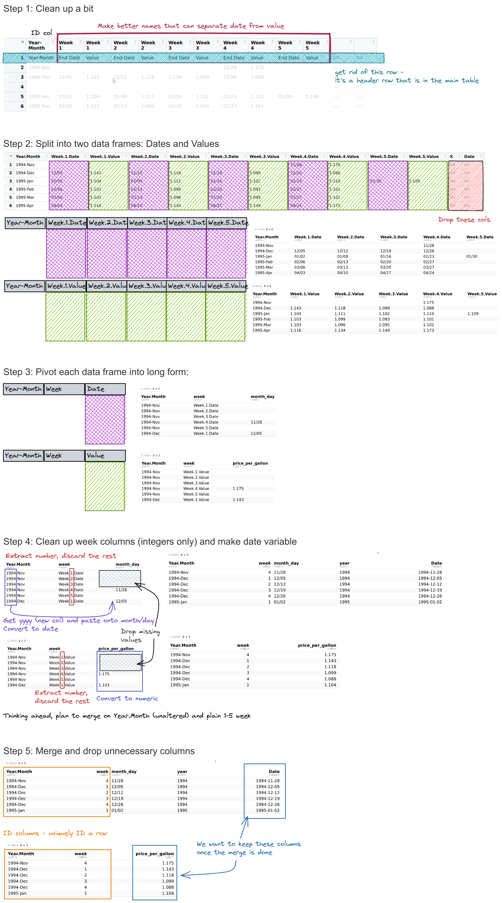

merge(x, y, by = "v1", all = F) # inner join
## v1 v2 v3
## 1 1 x1 y1
## 2 2 x2 y2
merge(x, y, by = "v1", all = T) # full join
## v1 v2 v3
## 1 1 x1 y1
## 2 2 x2 y2
## 3 3 x3 <NA>
## 4 4 <NA> y4
merge(x, y, by = "v1", all.x = T) # left join
## v1 v2 v3
## 1 1 x1 y1
## 2 2 x2 y2
## 3 3 x3 <NA>
merge(x, y, by = "v1", all.y = T) # right join
## v1 v2 v3
## 1 1 x1 y1
## 2 2 x2 y2
## 3 4 <NA> y425 Joining Data
The final essential data tidying and transformation skill you need to acquire is joining tables. It is common for data to be organized relationally - that is, certain aspects of the data apply to a group of data points, and certain aspects apply to individual data points, and there are relationships between the individual data points and the groups of data points that have to be documented.
25.1 Objectives
Identify columns (keys) which can be used to join separate but related tables
Sketch/plan out join operations based on matching keys and given objectives
Implement planned join operations in R or python
Identify when join operations have not completed successfully by looking for duplicated rows, number of rows/columns in the finished object, and missing value counts.
Relational Data Example: Primary School Records
Each individual has certain characteristics:
- full_name
- gender
- birth date
- ID number
Each student has specific characteristics:
- ID number
- parent name
- parent phone number
- medical information
- Class ID
Teachers may also have additional information:
- ID number
- Class ID
- employment start date
- education level
- compensation level
There are also fields like grades, which occur for each student in each class, but multiple times a year.
- ID number
- Student ID
- Class ID
- year
- term number
- subject
- grade
- comment
And for teachers, there are employment records on a yearly basis
- ID number
- Employee ID
- year
- rating
- comment
But each class also has characteristics that describe the whole class as a unit:
- location ID
- class ID
- meeting time
- grade level
Each location might also have some logistical information attached:
- location ID
- room number
- building
- number of seats
- AV equipment

We could go on, but you can see that this data is hierarchical, but also relational:
- each class has both a teacher and a set of students
- each class is held in a specific location that has certain equipment
It would be silly to store this information in a single table (though it can be done) because all of the teacher information would be duplicated for each student in each class; all of the student’s individual info would be duplicated for each grade. There would be a lot of wasted storage space and the tables would be much more confusing as well.
But, relational data also means we have to put in some work when we have a question that requires information from multiple tables. Suppose we want a list of all of the birthdays in a certain class. We would need to take the following steps:
- get the Class ID
- get any teachers that are assigned that Class ID - specifically, get their ID number
- get any students that are assigned that Class ID - specifically, get their ID number
- append the results from teachers and students so that there is a list of all individuals in the class
- look through the “individual data” table to find any individuals with matching ID numbers, and keep those individuals’ birth days.
It is helpful to develop the ability to lay out a set of tables in a schema (because often, database schemas aren’t well documented) and mentally map out the steps that you need to combine tables to get the information you want from the information you have.
25.2 Vocabulary
Table joins allow us to combine information stored in different tables, keeping certain information (the stuff we need) while discarding extraneous information.
Keys are values that are found in multiple tables that can be used to connect the tables. A key (or set of keys) uniquely identify an observation. A primary key identifies an observation in its own table. A foreign key identifies an observation in another table.
There are 3 main types of table joins:
Mutating joins, which add columns from one table to matching rows in another table
Ex: adding birthday to the table of all individuals in a classFiltering joins, which remove rows from a table based on whether or not there is a matching row in another table (but the columns in the original table don’t change)
Ex: finding all teachers or students who have class ClassIDSet operations, which treat observations as set elements (e.g. union, intersection, etc.)
Ex: taking the union of all student and teacher IDs to get a list of individual IDs
25.3 Illustrating Joins
Note: all of these animations are stolen from https://github.com/gadenbuie/tidyexplain.
If we start with two tables, x and y,

The next several sections will show animations demonstrating the different types of joins.
25.3.1 Mutating Joins
We’re primarily going to focus on mutating joins, as filtering joins can be accomplished by … filtering … rather than by table joins.
We can do a filtering inner_join to keep only rows which are in both tables (but we keep all columns)

But what if we want to keep all of the rows in x? We would do a left_join

If there are multiple matches in the y table, though, we might have to duplicate rows in x. This is still a left join, just a more complicated one.

If we wanted to keep all of the rows in y, we would do a right_join:

(or, we could do a left join with y and x, but… either way is fine).
And finally, if we want to keep all of the rows, we’d do a full_join:

You can find other animations corresponding to filtering joins and set operations here
Every join has a “left side” and a “right side” - so in some_join(A, B), A is the left side, B is the right side.
Joins are differentiated based on how they treat the rows and columns of each side. In mutating joins, the columns from both sides are always kept.
| Left Side | Right Side | ||
| Join Type | Rows | Cols | |
| inner | matching | all | matching |
| left | all | all | matching |
| right | matching | all | all |
| outer | all | all | all |
25.3.1.1 Code
Joins in base R are accomplished with the merge command.
Specify the keys to join by using by (or by.x and by.y if the column names are different in the two tables). Specify the rows to keep using all or all.x and all.y. By default, R will merge on any variables that have the same names in each table.
dplyr contains functions that specifically implement mutating joins separately, primarily for code readability.
library(dplyr)
inner_join(x, y)
## v1 v2 v3
## 1 1 x1 y1
## 2 2 x2 y2
left_join(x, y)
## v1 v2 v3
## 1 1 x1 y1
## 2 2 x2 y2
## 3 3 x3 <NA>
right_join(x, y)
## v1 v2 v3
## 1 1 x1 y1
## 2 2 x2 y2
## 3 4 <NA> y4
full_join(x, y)
## v1 v2 v3
## 1 1 x1 y1
## 2 2 x2 y2
## 3 3 x3 <NA>
## 4 4 <NA> y4Mutating joins in pandas are accomplished with the merge command. The join type can be specified using the how parameter (left, right, outer, inner, cross). Specify the keys to join by using on (or left_on and right_on if the column names are different in the two tables).
import pandas as pd
pd.merge(x, y) # inner join (how = 'inner' is default)
## v1 v2 v3
## 0 1 x1 y1
## 1 2 x2 y2
pd.merge(x, y, how = 'left')
## v1 v2 v3
## 0 1 x1 y1
## 1 2 x2 y2
## 2 3 x3 NaN
pd.merge(x, y, how = 'right')
## v1 v2 v3
## 0 1.0 x1 y1
## 1 2.0 x2 y2
## 2 4.0 NaN y4
pd.merge(x, y, how = 'outer') # full join
## v1 v2 v3
## 0 1.0 x1 y1
## 1 2.0 x2 y2
## 2 3.0 x3 NaN
## 3 4.0 NaN y425.3.2 Demo: Mutating Joins
An inner join keeps only rows that exist on both sides, but keeps all columns.
inner_join(t1, t2)
## # A tibble: 2 × 3
## x y z
## <chr> <dbl> <dbl>
## 1 B 2 2
## 2 D 3 5A left join keeps all of the rows in the left side, and adds any columns from the right side that match rows on the left. Rows on the left that don’t match get filled in with NAs.
There is a similar construct called a right join that is equivalent to flipping the arguments in a left join. The row and column ordering may be different, but all of the same values will be there
right_join(t1, t2)
## # A tibble: 3 × 3
## x y z
## <chr> <dbl> <dbl>
## 1 B 2 2
## 2 D 3 5
## 3 C NA 4
right_join(t2, t1)
## # A tibble: 3 × 3
## x z y
## <chr> <dbl> <dbl>
## 1 B 2 2
## 2 D 5 3
## 3 A NA 1An outer join keeps everything - all rows, all columns. In dplyr, it’s known as a full_join.
full_join(t1, t2)
## # A tibble: 4 × 3
## x y z
## <chr> <dbl> <dbl>
## 1 A 1 NA
## 2 B 2 2
## 3 D 3 5
## 4 C NA 4# This works because I already created the objects in R
# and have the reticulate package loaded
t1 = r.t1
t2 = r.t2An inner join keeps only rows that exist on both sides, but keeps all columns.
import pandas as pd
pd.merge(t1, t2, on = ['x']) # inner is default
## x y z
## 0 B 2.0 2.0
## 1 D 3.0 5.0A left join keeps all of the rows in the left side, and adds any columns from the right side that match rows on the left. Rows on the left that don’t match get filled in with NAs.
pd.merge(t1, t2, on = 'x', how = 'left')
## x y z
## 0 A 1.0 NaN
## 1 B 2.0 2.0
## 2 D 3.0 5.0
pd.merge(t2, t1, on = 'x', how = 'left')
## x z y
## 0 B 2.0 2.0
## 1 C 4.0 NaN
## 2 D 5.0 3.0There is a similar construct called a right join that is equivalent to flipping the arguments in a left join. The row and column ordering may be different, but all of the same values will be there
pd.merge(t1, t2, on = 'x', how = 'right')
## x y z
## 0 B 2.0 2.0
## 1 C NaN 4.0
## 2 D 3.0 5.0
pd.merge(t2, t1, on = 'x', how = 'right')
## x z y
## 0 A NaN 1.0
## 1 B 2.0 2.0
## 2 D 5.0 3.0An outer join keeps everything - all rows, all columns.
pd.merge(t1, t2, on = 'x', how = 'outer')
## x y z
## 0 A 1.0 NaN
## 1 B 2.0 2.0
## 2 C NaN 4.0
## 3 D 3.0 5.0I’ve included the other types of joins as animations because the animations are so useful for understanding the concept, but feel free to read through more information on these types of joins here [1].
25.3.3 Filtering Joins
A semi join keeps matching rows from x and y, discarding all other rows and keeping only the columns from x.

An anti-join keeps rows in x that do not have a match in y, and only keeps columns in x.

25.3.3.1 Code
Semi and anti joins aren’t available by default in base R. You have to do multiple stages of operations to get either one to work.
## Semi-join
# First, do an inner join
innerxy = merge(x, y, all = F)
innerxy
## v1 v2 v3
## 1 1 x1 y1
## 2 2 x2 y2
# Then, only keep cols in x
semixy = innerxy[,names(innerxy)%in% names(x)]
semixy
## v1 v2
## 1 1 x1
## 2 2 x2
## Anti-join
# First, do an outer join
outerxy = merge(x, y, all = T)
outerxy
## v1 v2 v3
## 1 1 x1 y1
## 2 2 x2 y2
## 3 3 x3 <NA>
## 4 4 <NA> y4
# Then, drop any rows with NAs
antixy = na.omit(outerxy)
antixy
## v1 v2 v3
## 1 1 x1 y1
## 2 2 x2 y2
# Then, only keep cols in x
antixy = antixy[,names(antixy) %in% names(x)]
antixy
## v1 v2
## 1 1 x1
## 2 2 x2In pandas, we have to be a bit tricky to get semi and anti joins.
import pandas as pd
# First, we merge the two data frames (inner by default)
semixy = pd.merge(x, y) # Semi join
semixy
## v1 v2 v3
## 0 1 x1 y1
## 1 2 x2 y2
# Then, we drop the extra columns
semixy = semixy[semixy.columns.intersection(x.columns)]
semixy
## v1 v2
## 0 1 x1
## 1 2 x2# This syntax keeps track of which rows are from which table
outer = x.merge(y, how='outer', indicator=True)
outer
## v1 v2 v3 _merge
## 0 1.0 x1 y1 both
## 1 2.0 x2 y2 both
## 2 3.0 x3 NaN left_only
## 3 4.0 NaN y4 right_only
# Then we drop any rows that aren't 'left_only'
antixy = outer[(outer._merge=='left_only')].drop('_merge', axis=1)
antixy
## v1 v2 v3
## 2 3.0 x3 NaN
# Then we drop any cols that aren't in x
antixy = antixy[antixy.columns.intersection(x.columns)]
antixy
## v1 v2
## 2 3.0 x325.3.4 Set Operations
When talking about set operations, we start with two different data frames than those used above:

All unique rows from x and y

Or, all unique rows from y and x.

All rows from x and y, keeping duplicate rows.

This is fundamentally the same as an rbind or bind_rows operation.
Common rows in x and y, keeping only unique rows.

All rows from x which are not also rows in y, keeping unique rows.


25.3.4.1 Code
It is possible to get set difference and intersection for data frames by applying the base methods setdiff and intersect, but dplyr does this by overriding those defaults, so it’s easier to just use that.
import pandas as pd
# Union
pd.concat([x, y]).drop_duplicates(keep = False)
## v1 v2
## 1 1.0 b
## 2 2.0 a
## 1 2.0 b
# Union all
pd.concat([x, y])
## v1 v2
## 0 1.0 a
## 1 1.0 b
## 2 2.0 a
## 0 1.0 a
## 1 2.0 b
# Intersection
intersect = x.merge(y, how='inner')
intersect
## v1 v2
## 0 1.0 a
# Set Difference
setdiffxy = x.merge(y, how='outer', indicator=True)
setdiffxy = setdiffxy[(setdiffxy._merge=='left_only')].drop('_merge', axis = 1)
setdiffxy
## v1 v2
## 1 1.0 b
## 2 2.0 a
setdiffyx = x.merge(y, how='outer', indicator=True)
setdiffyx = setdiffyx[(setdiffyx._merge=='right_only')].drop('_merge', axis = 1)
setdiffyx
## v1 v2
## 3 2.0 b25.4 Example: NYC Flights
We’ll use the nycflights13 package in R. Unfortunately, the data in this package are too big for me to reasonably store on github (you’ll recall, I had to use a small sample the last time we played with this data…). So before we can work with this data, we have to load the tables into Python.
Loading Data
if (!"nycflights13" %in% installed.packages()) install.packages("nycflights13")
if (!"dbplyr" %in% installed.packages()) install.packages("dbplyr")
library(nycflights13)
library(dbplyr)
library(reticulate)
# This saves the database to a sqlite db file.
# You will want to specify your own path
nycflights13_sqlite(path = "../data/")
## <SQLiteConnection>
## Path: /home/susan/Projects/Class/stat-computing-r-python/data/nycflights13.sqlite
## Extensions: TRUEimport sqlite3
con = sqlite3.connect("../data/nycflights13.sqlite")
cur = con.cursor()I am not going to cover SQLITE commands here - I’m just going to use the bare minimum, but you can find a very nice introduction to python and SQLITE at datacarpentry [2], and an introduction to the dbplyr package for a nice R-SQLITE interface.
Try it out: Understanding Relational Data
Sketch a diagram of which fields in each table match fields in other tables. Use the data documentation to help you with your sketch.
 here (scroll down a bit).
here (scroll down a bit).
Example: Mutating Joins
These functions may become a bit more interesting once we try them out on real-world data. Using the flights data, let’s determine whether there’s a relationship between the age of a plane and its delays.
library(nycflights13)
library(ggplot2)
library(dplyr)
library(tidyr)
plane_age <- planes %>%
mutate(age = 2013 - year) %>% # This gets us away from having to deal with 2 different year columns
select(tailnum, age, manufacturer)
delays_by_plane <- flights %>%
select(dep_delay, arr_delay, carrier, flight, tailnum)
# We only need to keep delays that have a plane age, so use inner join
res <- inner_join(delays_by_plane, plane_age, by = "tailnum")
ggplot(res, aes(x = age, y = dep_delay, group = cut_width(age, 1, center = 0))) +
geom_boxplot() +
ylab("Departure Delay (min)") +
xlab("Plane age") +
coord_cartesian(ylim = c(-20, 50))
ggplot(res, aes(x = age, y = arr_delay, group = cut_width(age, 1, center = 0))) +
geom_boxplot() +
ylab("Arrival Delay (min)") +
xlab("Plane age") +
coord_cartesian(ylim = c(-30, 60))

It doesn’t look like there’s much of a relationship to me. If anything, older planes are more likely to be early, but I suspect there aren’t enough of them to make that conclusion (3.54% are over 25 years old, and 0.28% are over 40 years old).
import pandas as pd
import sqlite3
from plotnine import *
con = sqlite3.connect("../data/nycflights13.sqlite")
planes = pd.read_sql_query("SELECT * FROM planes", con)
flights = pd.read_sql_query("SELECT * FROM flights", con)
con.close() # close connection
plane_age = planes.assign(age = lambda df: 2013 - df.year).loc[:,["tailnum", "age", "manufacturer"]]
delays_by_plane = flights.loc[:, ["dep_delay", "arr_delay", "carrier", "flight", "tailnum"]]
res = pd.merge(plane_age, delays_by_plane, on = "tailnum", how = "inner")
# cut_width isn't in plotnine, so we have to create the bins ourselves first
age_bins = [i for i in range(2 + int(max(res.age)))]
res = res.assign(agebin = pd.cut(res.age, age_bins))
# res.agebin.value_counts(dropna=False)
(
ggplot(res, aes(x = "age", y = "dep_delay", group = "agebin")) +
geom_boxplot() +
ylab("Departure Delay (min)") +
xlab("Plane age") +
coord_cartesian(ylim = [-20, 50])
)
## <Figure Size: (640 x 480)>
(
ggplot(res, aes(x = "age", y = "arr_delay", group = "agebin")) +
geom_boxplot() +
ylab("Arrival Delay (min)") +
xlab("Plane age") +
coord_cartesian(ylim = (-30, 60))
)
## <Figure Size: (640 x 480)>

25.5 Example: Gas Prices Data
Let’s return to the gas price data introduced in Section 24.5. I’ve repeated the setup chunks here for you to read in the data appropriately.
25.5.1 Setup: Gas Price Data Cleaning
For the next example, we’ll read the data in from the HTML table online and work to make it something we could e.g. plot. Before we can start cleaning, we have to read in the data:
Try it out: Formatting using merge + pivot
Can you format the data in a long-skinny format for plotting using pivot operations using wide-to-long pivot operation(s) and a database merge?
You can start with the gas_prices_raw
Write out a list of steps, and for each step, sketch out what the data frame should look like.
How do your steps compare to the steps you used for the manual approach?

We’ll use the same data cleaning function as before:
# Clean up the table a bit
gas_prices_raw <- gas_prices_html %>%
set_names(fix_gas_names(names(.))) %>%
# remove first row that is really an extra header row
filter(Year.Month != "Year-Month") %>%
# get rid of empty rows
filter(Year.Month != "")
## Error in set_names(., fix_gas_names(names(.))): could not find function "set_names"
head(gas_prices_raw)
## Error: object 'gas_prices_raw' not foundgas_prices_dates <- select(gas_prices_raw, 1, matches("Week.[1-5].Date"))
## Error: object 'gas_prices_raw' not found
gas_prices_values <- select(gas_prices_raw, 1, matches("Week.[1-5].Value"))
## Error: object 'gas_prices_raw' not found
head(gas_prices_dates)
## Error: object 'gas_prices_dates' not found
head(gas_prices_values)
## Error: object 'gas_prices_values' not foundgas_prices_dates_long <- pivot_longer(gas_prices_dates, -Year.Month, names_to = "week", values_to = "month_day")
## Error: object 'gas_prices_dates' not found
gas_prices_values_long <- pivot_longer(gas_prices_values, -Year.Month, names_to = "week", values_to = "price_per_gallon")
## Error: object 'gas_prices_values' not found
head(gas_prices_dates_long)
## Error: object 'gas_prices_dates_long' not found
head(gas_prices_values_long)
## Error: object 'gas_prices_values_long' not foundlibrary(lubridate) # ymd function
gas_prices_dates_long_clean <- gas_prices_dates_long %>%
filter(month_day != "") %>%
mutate(week = str_extract(week, "\\d") %>% as.numeric()) %>%
mutate(year = str_extract(Year.Month, "\\d{4}"),
Date = paste(year, month_day, sep = "/") %>%
ymd())
## Error: object 'gas_prices_dates_long' not found
gas_prices_values_long_clean <- gas_prices_values_long %>%
filter(price_per_gallon != "") %>%
mutate(week = str_extract(week, "\\d") %>% as.numeric()) %>%
mutate(price_per_gallon = as.numeric(price_per_gallon))
## Error: object 'gas_prices_values_long' not found
head(gas_prices_dates_long_clean)
## Error: object 'gas_prices_dates_long_clean' not found
head(gas_prices_values_long_clean)
## Error: object 'gas_prices_values_long_clean' not foundgas_prices_raw = gas_prices_html.copy()
## NameError: name 'gas_prices_html' is not defined
# What do column names look like?
gas_prices_raw.columns # Multi-Index
## NameError: name 'gas_prices_raw' is not defined
# (https://stackoverflow.com/questions/25189575/pandas-dataframe-select-columns-in-multiindex)
colnames = fix_gas_names(gas_prices_raw.columns.get_level_values(0))
## NameError: name 'fix_gas_names' is not defined
colnames
## NameError: name 'colnames' is not defined
# Set new column names
gas_prices_raw.columns = colnames
## NameError: name 'colnames' is not defined
# Drop any rows with NaN in Year-Month
gas_prices_raw = gas_prices_raw.dropna(axis = 0, subset = ['Year-Month'])
## NameError: name 'gas_prices_raw' is not defined
gas_prices_raw.head()
## NameError: name 'gas_prices_raw' is not definedgas_prices_dates = gas_prices_raw.filter(regex = 'Year-Month|Week.\d.Date', axis = 1)
## NameError: name 'gas_prices_raw' is not defined
gas_prices_values = gas_prices_raw.filter(regex = 'Year-Month|Week.\d.Value', axis = 1)
## NameError: name 'gas_prices_raw' is not defined
gas_prices_dates.head()
## NameError: name 'gas_prices_dates' is not defined
gas_prices_values.head()
## NameError: name 'gas_prices_values' is not definedgas_prices_dates_long = pd.melt(gas_prices_dates, id_vars = 'Year-Month', var_name = "week", value_name = "month_day")
## NameError: name 'gas_prices_dates' is not defined
gas_prices_values_long = pd.melt(gas_prices_values, id_vars = 'Year-Month', var_name = "week", value_name = "price_per_gallon")
## NameError: name 'gas_prices_values' is not defined
gas_prices_dates_long.head()
## NameError: name 'gas_prices_dates_long' is not defined
gas_prices_values_long.head()
## NameError: name 'gas_prices_values_long' is not definedgas_prices_dates_long_clean = gas_prices_dates_long.dropna().copy()
## NameError: name 'gas_prices_dates_long' is not defined
gas_prices_dates_long_clean["week"] = gas_prices_dates_long_clean.week.str.extract(r"Week.(\d).Date")
## NameError: name 'gas_prices_dates_long_clean' is not defined
gas_prices_dates_long_clean["year"] = gas_prices_dates_long_clean["Year-Month"].str.extract(r"(\d{4})-[A-z]{3}")
## NameError: name 'gas_prices_dates_long_clean' is not defined
gas_prices_dates_long_clean["Date"] = gas_prices_dates_long_clean.year + "/" + gas_prices_dates_long_clean.month_day
## NameError: name 'gas_prices_dates_long_clean' is not defined
gas_prices_dates_long_clean["Date"] = pd.to_datetime(gas_prices_dates_long_clean.Date)
## NameError: name 'gas_prices_dates_long_clean' is not defined
gas_prices_values_long_clean = gas_prices_values_long.dropna().copy()
## NameError: name 'gas_prices_values_long' is not defined
gas_prices_values_long_clean["week"] = gas_prices_values_long_clean.week.str.extract(r"Week.(\d).Value")
## NameError: name 'gas_prices_values_long_clean' is not defined
gas_prices_values_long_clean["price_per_gallon"] = pd.to_numeric(gas_prices_values_long_clean["price_per_gallon"])
## NameError: name 'gas_prices_values_long_clean' is not defined
gas_prices_dates_long_clean.head()
## NameError: name 'gas_prices_dates_long_clean' is not defined
gas_prices_values_long_clean.head()
## NameError: name 'gas_prices_values_long_clean' is not definedgas_prices = pd.merge(gas_prices_dates_long_clean, gas_prices_values_long_clean, on = ("Year-Month", "week")).loc[:,["Date", "price_per_gallon"]]
## NameError: name 'gas_prices_dates_long_clean' is not defined
gas_prices.head()
## NameError: name 'gas_prices' is not defined25.6 References
[1]
G. Grolemund and H. Wickham, R for Data Science, 1st ed. O’Reilly Media, 2017 [Online]. Available: https://r4ds.had.co.nz/. [Accessed: May 09, 2022]
[2]
The Carpentries, “Accessing SQLite Databases Using Python and Pandas,” Data Analysis and Visualization in Python for Ecologists. 2022 [Online]. Available: https://datacarpentry.org/python-ecology-lesson/09-working-with-sql.html. [Accessed: Nov. 03, 2024]